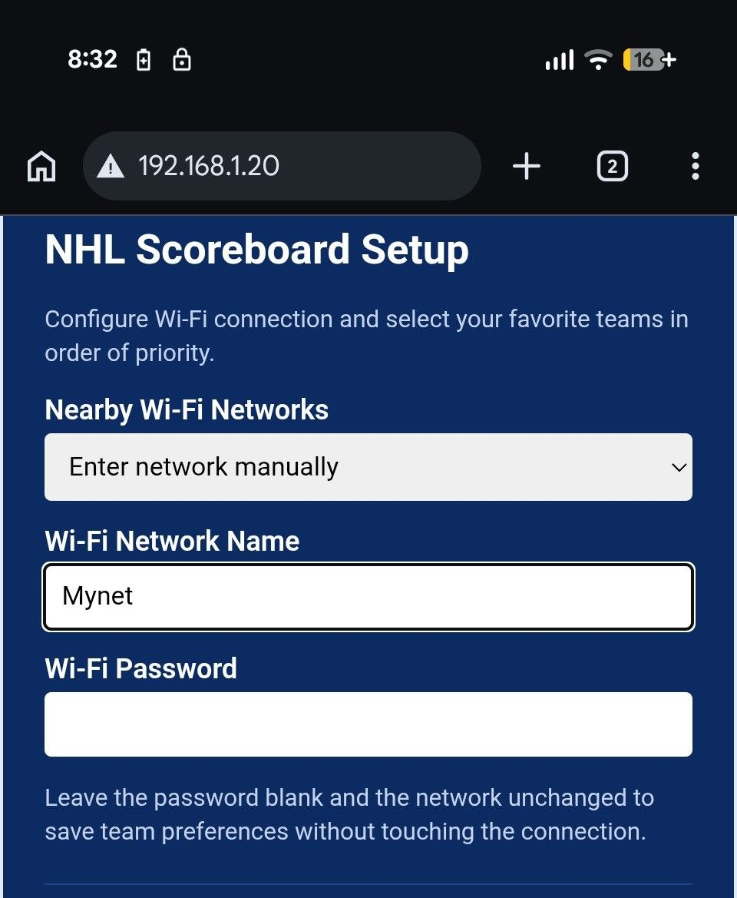
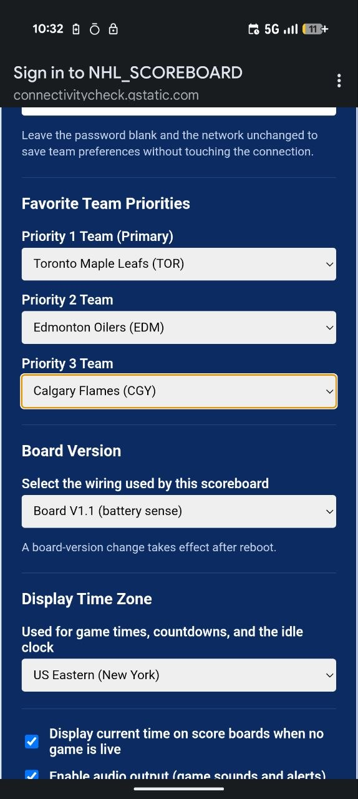

The score, the period, the shots, the horn.
A desk scoreboard that follows the NHL live. Pick your team once and it keeps up with the game on its own — so you can watch it instead of checking your phone.
$80 + shipping
Pickup in the Beaches area of Toronto, or shipping anywhere in Canada. Built in Toronto, one at a time. Buy on Etsy or get in touch.
What it does while the game is on

It fires when they score
The score, period, game clock, shots on goal and penalty lights all update every five seconds straight from the NHL's feed. When your team puts one in, the colour screen flips to GOAL!!! and the horn goes off. Pick from five horns in setup, including the Edmonton, Calgary, Ottawa and Boston arena horns, and preview each one before you save it.

It works where you actually watch
Two LED matrices carry the score, a third shows the period, and a four-digit display keeps the clock. About three hours on the internal battery, so it can sit on the coffee table or the bar at the other end of the room instead of next to a wall. Leave it on USB-C and it runs indefinitely.

Follow the teams you care about
Turn it on, join the board's Wi-Fi from your phone, pick your home network and choose up to three teams to follow. Priority one gets the colour screen; if two of your teams are playing at once, the second one takes the LED matrices. When the game's between periods it rotates standings, upcoming games with countdowns to puck drop, and the latest league headlines.

There's a game on it too
750 hockey questions are built in. Fifteen a round, ten seconds on the clock, points for answering fast. Play solo against the board, or run Multiplayer Night and have up to fifteen people join from their own phones while the scoreboard keeps the standings. Three wrong answers and you're benched.
No app, no account, no subscription.
You buy the board once and the live updates keep coming. It quietly updates its own firmware over your Wi-Fi, so it keeps getting better after you buy it — new features, schedule changes, NHL rule tweaks.
Who it's for

The fan who checks their phone every five minutes
The board keeps the score on the desk so they don't have to. It comes standard in white on blue, and custom two-colour finishes are an extra $15 if you'd rather have it in your team's colours.

Anyone following more than one team
Three teams, in priority order. Your main team takes the colour screen, your second team takes the matrices when both are on at once.
A house with no rule against checking the score
It sits on a desk, it doesn't need a phone in your hand, and it doesn't need a subscription to keep working. Setup is about a minute.
Buying one
- Price$80, plus shipping where it applies
- PickupBeaches area of Toronto
- ShippingAnywhere in Canada
- SetupAbout a minute. Join the board's Wi-Fi from a phone, pick your teams, done
- In the boxThe scoreboard and a USB-C cable
- UpdatesFirmware updates itself over your Wi-Fi
- ColoursStandard white on blue. Custom two-colour, +$15